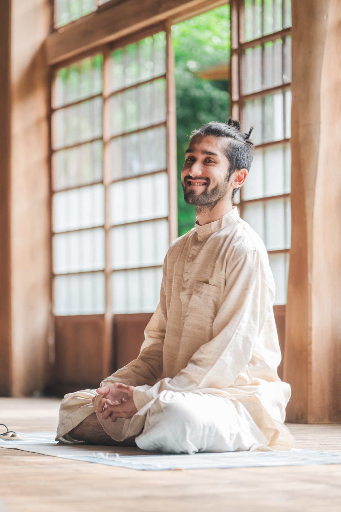

頑張るヨガに、少し疲れていませんか。
本場インドで体感してきたヨーガを、短く、簡単に、心地よく。
体が硬くても、ズボラでも、そのままで大丈夫。
Shanta Yoga 静けさに還る
体験クラスに参加するIs this you?
その感覚は、あなたのせいではありません。
「動き」だけを切り取ったヨガでは、
本来のヨーガの半分しか届いていないからです。
Why Shanta Yoga
インドで生まれたヨーガは本来、ポーズ（アーサナ）はほんの入り口。呼吸法と瞑想を通じて「内側の静けさ」に還るための、体系だった智慧です。Shanta Yogaはその全体を、日本の暮らしに合うかたちで届けます。
01
目指すのは美しいポーズではなく、呼吸が深まり、心が静まること。アーサナは「座って呼吸するための準備」という本来の位置づけに戻します。だから比べない、頑張らない。
02
ヨガの聖地・リシケシをはじめ、本場インドで数多くのヨガクラスや実践を自ら体験。そこで「本当に効く」と体感したエッセンスだけを、日本の暮らしに合うかたちで構成しています。
03
柔軟性も、根性も、ウェアの新調も要りません。1回は長くなく、動きは簡単。「正しくやる」より「体感する」を大切にしているから、ズボラでも硬くても続けられます。
Śāntaシャーンタ サンスクリット語で「静けさ」
情報も予定も詰め込みすぎた毎日の奥に、誰の中にもある静かな場所。Shanta Yogaは、そこへ還るための時間です。
Class Flow
激しい動きも、長い時間も必要ありません。
簡単な動きを「体感する」ことを大切に。終わる頃には、頭の中が静かになっています。
まずは座って、いまの呼吸をただ観察するところから。
マントラは、音の振動。声に出した周波数・波動が体の内側に響き、思考のざわめきを静めていきます。
硬い体でも無理なくできる、ゆるやかな動きで体をほどきます。ポーズの出来ばえは問いません。
本場インドで体感してきた呼吸法で、自律神経を整え、心の波を静めていきます。ここがShanta Yogaの核。
整った呼吸のまま、瞑想へ。「何も考えない」を頑張る必要はありません。自然と静けさが訪れます。
Schedule
毎週、月・金・土の朝に行っています。
毎週 月・金・土
5:40 〜 6:00
瞑想のみ。ただ、共に静かに座る時間です。
毎週 月・金・土
6:00 〜 7:00
アーサナ・呼吸法・瞑想。Shanta Yogaの3つの柱をひと通り行う時間です。
毎月 第一土曜
哲学クラス
聖典に学ぶ哲学クラスと、質疑応答などのグループセッション。学びを深める月に一度の時間です。
すべてのクラスにアーカイブ付き。当日参加できなくても、録画でご覧いただけます。
朝は、思考のノイズがまだ始まっていない、一日でいちばんマインドがクリアな時間。そしてヨーガは、空腹の状態で行うことが古くから大切にされてきました。呼吸は深く通り、瞑想は自然と深まります。だからShanta Yogaは、朝に行います。
静けさから始まった一日は、その日ずっと、あなたの内側に残ります。
Price
週3回のクラスも、瞑想会も、哲学クラスも、アーカイブも。
すべて込みのシンプルな月額制です。
月額（すべて込み）
¥9,300/月
一般的なヨガスタジオの「月4回プラン」とほぼ同じ価格で、
月20回以上のライブクラスに参加できます。
Voices
実際にクラスに参加されている方々の言葉です。
瞑想会でも、深い体感とエネルギーを感じました。クリシュナさんの声の波動が体の中に響き、深い呼吸とともに心が静まっていきました。ただ声を出しながら呼吸するだけで、指先まで温まっていく感覚。戻ってこれる場所ができたという安心感を味わいました。
ヨガ歴4年でも、こんなに氣持ちよく瞑想できたのは初めて。アシュタンガヨガを2年続けてきたけど、クリシュナさんの瞑想はあっという間に終わってしまうほど心地よくて。外の風や虫の声すら愛おしく感じるほど、はじめて内側と向き合えた時間でした。
20代 女性
心が沈む日もあるけれど、クリシュナさんのヨーガで得た心の定位置に戻れる感覚があるから大丈夫と思えるように。以前は自分の精神が乱れても気づけなかったけれど、今は距離感やエネルギーの使い方も自然と整ってきています。
41歳で体が硬くなってきたと感じていたけれど、難しいポーズをしなくても身体がゆるみ、ムーラバンダの意識やチャクラの場所の感覚がしっかり持てるように。身体の内側を感じられるヨガです。
40代 女性
ずっと冷え性で悩まされていたけど、朝ヨーガに参加し始めてから足先がポカポカするようになってきました。
30代 女性
少しづつですが自分も他人もゆるせるようになってきました。心が以前より穏やかです。ありがとうございます^^
40代 男性
早起きの抵抗が少なくなってきました（朝に瞑想をやると、いいスタートを切れるのを体感したので）。クリシュナさんのヨガと瞑想で初めて、ヨガと瞑想、呼吸法をセットでやるとこんなに瞑想に入りやすいんだと、やるほどに体感するように思います。
マントラは初めてでしたが、振動を感じるのが心地よく、これも瞑想に入っていきやすいと感じました。生理痛にも効くことを体感して、素晴らしいなって思いました。
30代 女性

Founder
日本とインドのハーフ。自身がヨガに救われた経験をもとに、ヨガの聖地・インド リシケシでの修行を経て、Shanta Yogaを主宰。
本場インドでは数多くのヨガクラスや実践を自ら体験。そのなかで「本当に効く」と体感したものだけを選び、長くなく、簡単にできて、体感を大切にするいまのかたちに磨き上げました。
呼吸法と瞑想を軸に、頑張りすぎた体と心を優しくほぐし、内なる静けさ（Shanta）をもたらす場を展開しています。
「頑張るヨガ」ではなく、「還るヨーガ」を。ポーズが取れなくても、続かない性格でも、扉はいつでも開いています。
FAQ
むしろ歓迎です。Shanta Yogaの中心は呼吸と瞑想であり、柔軟性は一切問いません。硬い体のままで受けられるように構成されています。
はい。ポーズの知識も経験もゼロで大丈夫です。「呼吸を観察する」ところから始めるので、初めての方ほど変化を感じやすいクラスです。
Shanta Yogaは「頑張って続ける」ことを求めません。ズボラでもできる構成にしているのは、静けさは努力の先ではなく、力を抜いた先にあるからです。
多くのヨガはアーサナ（動き）が中心ですが、Shanta Yogaは主宰者が本場インドで数多くのクラスを体験するなかで「本当に効く」と体感したものをもとに、呼吸法と瞑想を軸に据えています。1回は長くなく、動きも簡単。運動ではなく「心が静まる体験」が目的です。
すべてのクラスにアーカイブ（録画）が付いています。当日参加できなくても、ご自身のペースで後から取り組めます。まずは録画から始めて、慣れてきたら朝のライブに合流する方も多いです。
ありません。激しい動きがないため、体力に自信がない方やご年配の方にも安心してご参加いただけます。
Experience
必要なのは、動きやすい服だけ。
硬い体と、疲れた心のまま、どうぞそのまま来てください。
ご予約は公式予約サイトから